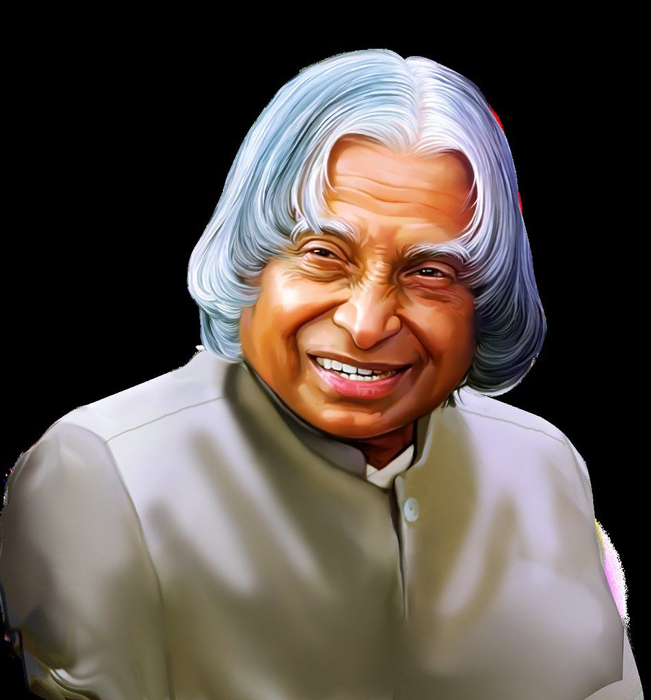

Dr-APJ-Abdul-Kalam
(1931-2015)
Missile Man of India
A.P.J. Abdul Kalam, in full Avul Pakir Jainulabdeen Abdul Kalam, (born October 15, 1931, Rameswaram, India—died July 27, 2015, Shillong), Indian scientist and politician who played a leading role in the development of India’s missile and nuclear weapons programs. He was president of India from 2002 to 2007. Kalam earned a degree in aeronautical engineering from the Madras Institute of Technology and in 1958 joined the Defence Research and Development Organisation (DRDO). In 1969 he moved to the Indian Space Research Organisation, where he was project director of the SLV-III, the first satellite launch vehicle that was both designed and produced in India.
Biography
- 1981: Padma Bhushan Government of India.
- 1990: Padma Vibhushan Government of India.
- 1997: Bharat Ratna Government of India.
- 1997: Indira Gandhi Award for National Integration Government of India.
- 1998: Veer Savarkar Award Government of India
- 2000: SASTRA Ramanujan Prize Shanmugha Arts,Science,Technology & Research Academy, India
- 2013: Von Braun Award National Space Society